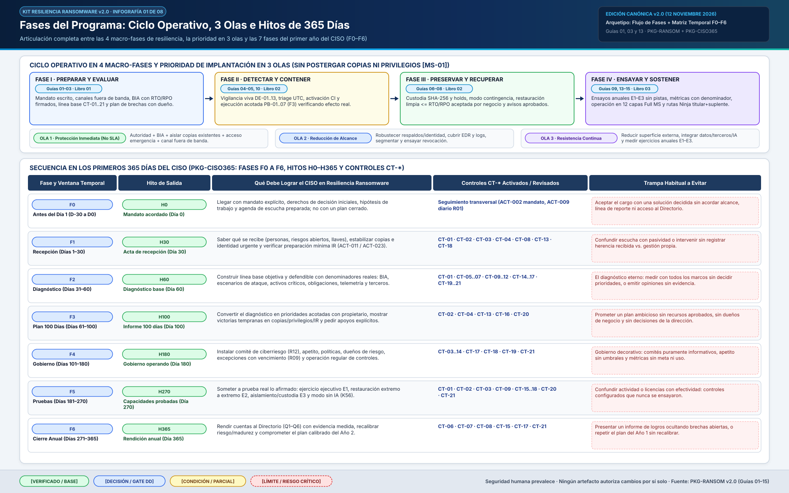
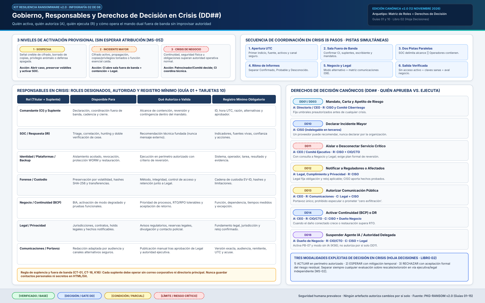
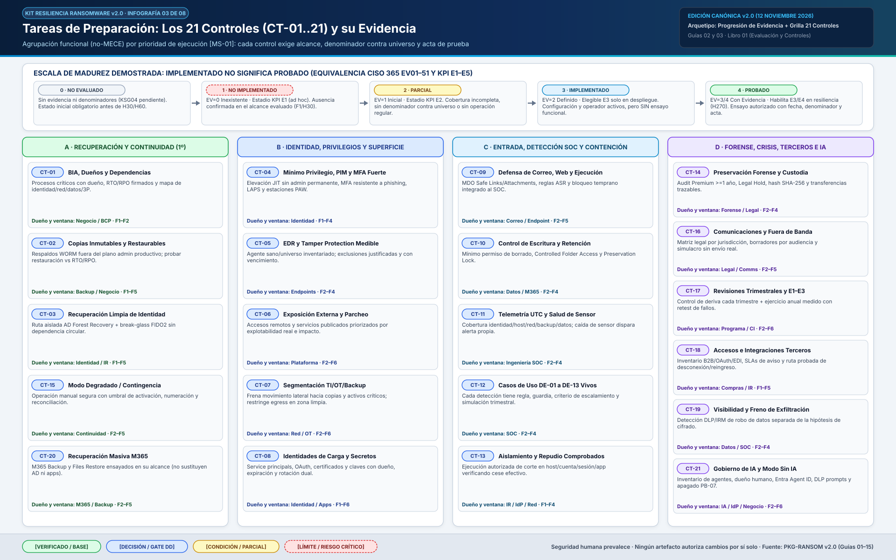
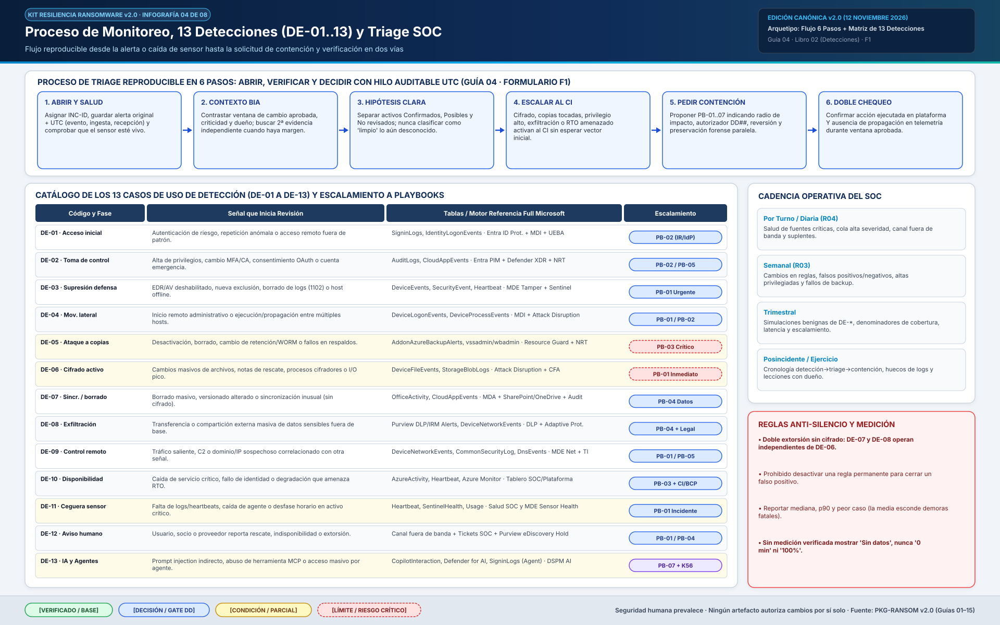
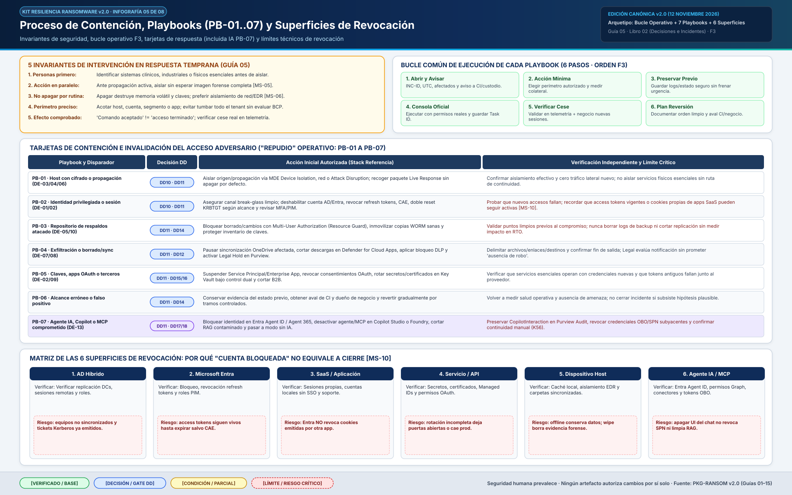
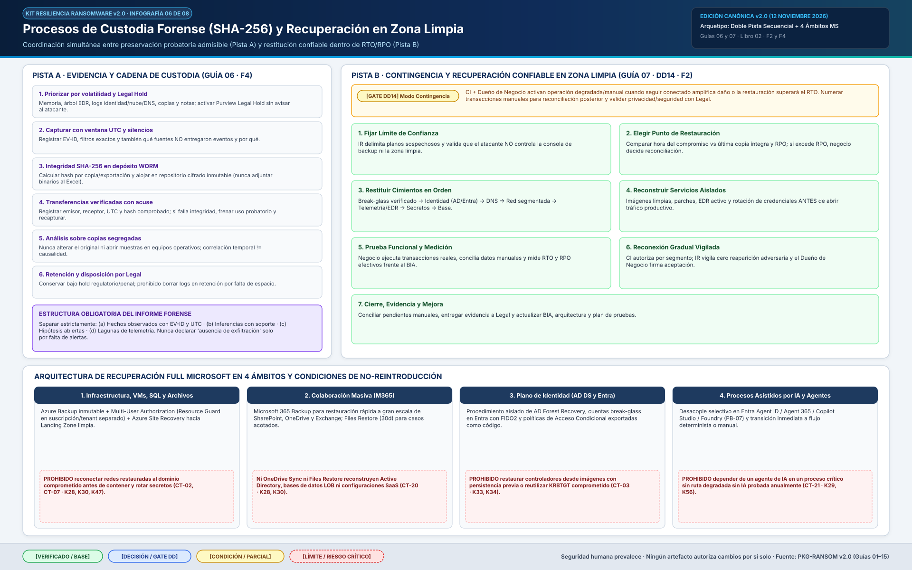
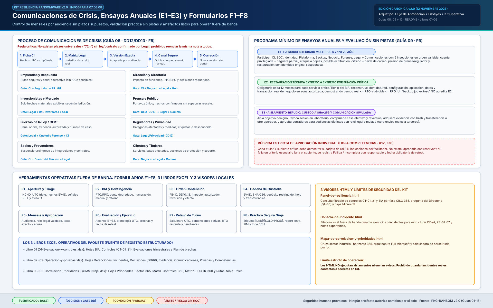
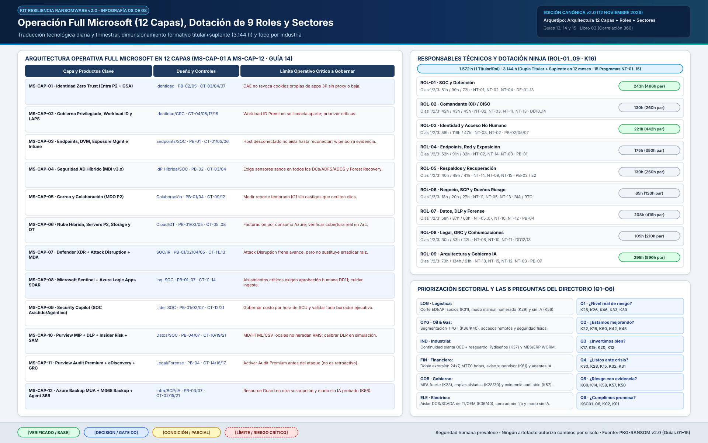

Serie de 8 Infografías: Programa Operativo de Resiliencia ante Ransomware (v2.0)
24 archivos generados (8 SVG vectoriales 1920×1200 + 8 PNG Retina 3840×2400 + 8 JPG 3840×2400) — Fases, Tareas, Responsables, Procesos Críticos y Arquitectura Full Microsoft.
RR-01 Mapa Maestro Ciclo y Fases 365 — Fases del Programa: Ciclo Operativo, 3 Olas e Hitos de 365 Días

RR-02 Gobierno Roles Autoridad y Activacion — Gobierno, Responsables y Derechos de Decisión en Crisis (DD##)

RR-03 Catalogo 21 Controles y Escala Evidencia — Tareas de Preparación: Los 21 Controles (CT-01..21) y su Evidencia

RR-04 Proceso Monitoreo 13 Detecciones y Triage — Proceso de Monitoreo, 13 Detecciones (DE-01..13) y Triage SOC

RR-05 Proceso Contencion Playbooks y Revocacion — Proceso de Contención, Playbooks (PB-01..07) y Superficies de Revocación

RR-06 Proceso Forense Continuidad y Recuperacion — Procesos de Custodia Forense (SHA-256) y Recuperación en Zona Limpia

RR-07 Proceso Comunicaciones Pruebas y Formularios — Comunicaciones de Crisis, Ensayos Anuales (E1–E3) y Formularios F1–F8

RR-08 Arquitectura Full Microsoft y Dotacion Roles — Operación Full Microsoft (12 Capas), Dotación de 9 Roles y Sectores
